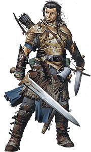

Algunos toman las armas por la gloria, la riqueza, o la venganza. Otros batallan para probarse a si mismos, proteger a otros, o porque no saben hacer nada más. Incluso otros aprenden los caminos de las armas para afinar sus cuerpos en batalla y demostrar su valía en la forja de la guerra. Señores del campo de batalla, los guerreros son muy dispares, entrenando con muchas armas o sólo una, perfeccionando los usos de la armadura, aprendiendo las técnicas de lucha de exóticos maestros, y estudiando el arte del combate, todo para convertirse ellos mismos en armas vivientes. Mucho más que simples matones, estos guerreros cualificados revelan la verdad mortífera de sus armas, volviendo trozos de metal en armas capaces de domar reinos, masacrar monstruos, y enaltecer los corazones de los ejércitos. Soldados, caballeros, cazadores, y artistas de la guerra, los guerreros son campeones sin parangón, y ¡ay de aquellos que se atreven a levantarse contra ellos!
Papel: Los Guerreros sobresalen en combate derrotando a sus enemigos, controlando el flujo de la batalla, y sobreviviendo a incursiones. Si bien sus armas y métodos específicos les conceden una amplia variedad de tácticas, pocos pueden igualar a los guerreros en la destreza de la pura batalla.
Alineamiento: cualquiera
Dado de Golpe: d10
Habilidades de clase: Artesanía (Int), Intimidar (Car), Montar
(Des), Nadar (Fue), Profesión (Sab), Saber (dungeons) (Int), Saber
(ingeniería) (Int), Supervivencia (Sab), Trato con animales (Car) y
Trepar (Fue).
Rangos de habilidad por nivel: 2 + modificador de
Inteligencia.
Competencia con armas y armaduras: Un guerrero es competente con todas las armas sencillas y marciales y con todas las armaduras (pesadas, intermedias y ligeras) y escudos (incluyendo escudos paveses).
Dotes adicionales: A primer nivel, y cada nivel par en adelante, un guerrero gana una dote adicional además de la ganada por el avance normal (lo que significa que el guerrero gana una dote en cada nivel). Esta dote adicional debe ser seleccionada de la lista de dotes de combate, también llamadas a veces “dotes adicionales de guerrero”.
Al llegar a nivel 4, y cada cuatro niveles posteriores (8º, 12º y siguientes), un guerrero puede escoger aprender una nueva dote en lugar de una dote que ya hubiera aprendido. En efecto, el guerrero pierde la dote a cambio de una nueva. La vieja dote no puede haber sido utilizada como un requisito previo de otra dote (que posea el guerrero), clase de prestigio, u otra aptitud. Un guerrero sólo puede cambiar una dote por nivel y debe escoger si desea o no cambiar la dote en el momento en que gana una nueva dote al subir de nivel.
Valentía: Empezando a nivel 2, un guerrero gana un bonificador de + 1 a su TS de Voluntad contra miedo. Este bonificador aumenta en +1 cada cuatro niveles a partir del segundo.
Entrenamiento con armaduras: Empezando a nivel 3, un guerrero aprende a ser más ágil mientras lleva armadura. Siempre que lleve una armadura, reduce la penalización por llevar armadura en 1 (con un mínimo de 0) e incrementa el bonificador máximo de Destreza permitido por esa armadura en 1. Cada cuatro niveles tras eso (7º, 11º y 15º), estos bonificadores se incrementan en +1 cada vez, hasta una reducción máxima del penalizador de armadura de -4.y un incremento de + 4 a la máxima bonificación de Destreza permitida.
Además, un guerrero puede mover su velocidad normal mientras use una armadura intermedia. A nivel 7, un guerrero puede moverse a su velocidad normal mientras use armadura pesada.
Entrenamiento en armas (Ex): A partir de nivel 5, un guerrero puede seleccionar un grupo de armas, como se señala abajo. Cada vez que ataque con un arma de ese grupo, gana un bonificador de + 1 a las tiradas de ataque y daño.
Cada cuatro niveles en adelante (9º, 13º, y 17º), un guerrero obtiene entrenamiento en otro grupo de armas. Gana un bonificador de +1 a las tiradas de ataque y daño cuando use un arma de ese grupo. Además, los bonificadores obtenidos en cada grupo de armas se incrementan en +1. Por ejemplo, cuando un guerrero alcanza el nivel 9, recibe un bonificador de + 1 a las tiradas de ataque y daño con un grupo de armas y un bonificador de + 2 a la tirada de ataque y daño con el grupo de de armas seleccionado a nivel 5. Los bonificadores obtenidos por grupos que se solapan no se apilan. Se elige el bonificador más grande dado por un arma si ésta está en dos o más grupos.
Un guerrero también añade este bonificador en cualquier maniobra de combate hecha con armas de este grupo. Este bonificador también se aplica a la Defensa contra Maniobras de Combate del guerrero cuando se defienda contra intentos de desarmar y romper hecho contra armas de este grupo.
Maestría con la armadura (Ex): A nivel 19, un guerrero gana Reducción del daño 5/- cada vez que lleve armadura o use un escudo
Maestría con las armas (Ex): A nivel 20, un guerrero elige un arma, como la espada larga, gran hacha o arco largo. Cualquier ataque hecho con ese arma confirma automáticamente todas las amenazas de crítico y tiene su multiplicador de daño incrementado en +1 (x2 se convierte en x3, por ejemplo). Además, no puede ser desarmado mientras empuñe un arma de este tipo.
| Nivel | Ataque base | S. de Fort. | S. de Ref. | S. de Vol. | Especial |
| 1 | +1 | +2 | +0 | +0 | Dote adicional |
| 2 | +2 | +3 | +0 | +0 | Dote adicional, Valentía 1 |
| 3 | +3 | +3 | +1 | +1 | Entrenamiento con armaduras 1 |
| 4 | +4 | +4 | +1 | +1 | Dote adicional |
| 5 | +5 | +4 | +1 | +1 | Entrenamiento en armas 1 |
| 6 | +6/+1 | +5 | +2 | +2 | Dote adicional, Valentía 2 |
| 7 | +7/+2 | +5 | +2 | +2 | Entrenamiento con armaduras 2 |
| 8 | +8/+3 | +6 | +2 | +2 | Dote adicional |
| 9 | +9/+4 | +6 | +3 | +3 | Entrenamiento en armas 2 |
| 10 | +10/+5 | +7 | +3 | +3 | Dote adicional, Valentía 3 |
| 11 | +11/+6/+1 | +7 | +3 | +3 | Entrenamiento con armaduras 3 |
| 12 | +12/+7/+2 | +8 | +4 | +4 | Dote adicional |
| 13 | +13/+8/+3 | +8 | +4 | +4 | Entrenamiento en armas 3 |
| 14 | +14/+9/+4 | +9 | +4 | +4 | Dote adicional, Valentía 4 |
| 15 | +15/+10/+5 | +9 | +5 | +5 | Entrenamiento con armaduras 4 |
| 16 | +16/+11/+6/+1 | +10 | +5 | +5 | Dote adicional |
| 17 | +17/+12/+7/+2 | +10 | +5 | +5 | Entrenamiento en armas 4 |
| 18 | +18/+13/+8/+3 | +11 | +6 | +6 | Dote adicional, Valentía 5 |
| 19 | +19/+14/+9/+4 | +11 | +6 | +6 | Maestría con la armadura |
| 20 | +20/+15/+10/+5 | +12 | +6 | +6 | Dote adicional, Maestría con las armas |